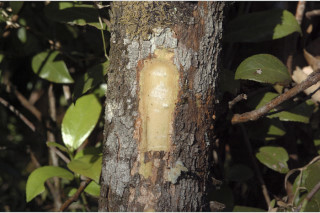
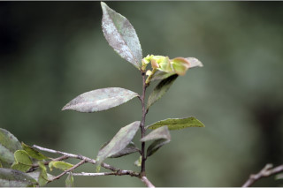
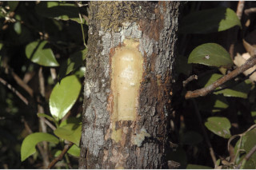
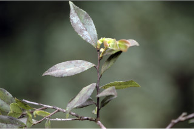
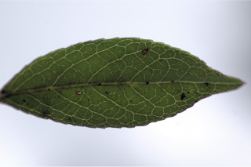
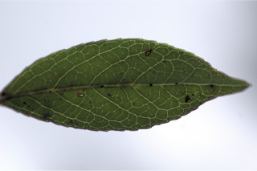
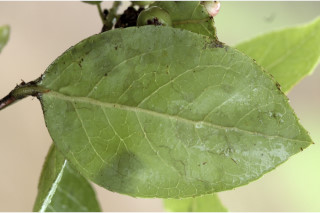
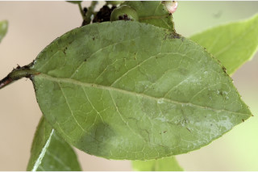

Small trees up to 7 m tall.
7 ಮೀ. ಎತ್ತರದವರೆಗಿನ ಸಣ್ಣ ಮರಗಳು.
Small trees up to 7 m tall.
சிறிய மரம் 7 மீ. உயரம் வரை வளரக்கூடியது.
Bark brownish, irregularly scaly; blaze yellowish.
ತೊಗಟೆ ಕಂದು ಬಣ್ಣದಲ್ಲಿದ್ದು,ಅನಿಯತವಾಗಿ ಚಕ್ಕೆ ರೂಪದಲ್ಲಿರುತ್ತದೆ;ಕಚ್ಚು ಮಾಡಿದ ಜಾಗ ಹಳದಿ ಛಾಯೆ ಹೊಂದಿರುತ್ತದೆ.
Bark brownish, irregularly scaly; blaze yellowish.
மரத்தின் பட்டை ப்ரவுன் நிறமானது, ஒழுங்கற்ற செதில்களாக உதிருபவை; உள்பட்டை மஞ்சள் நிறமானது.
Young branchlets angular to subterete, pubescent.
ಕಿರುಕೊಂಬೆಗಳು ಕೋನಯುಕ್ತವಾದ ರೀತಿಯಿಂದ ಉಪದುಂಡಾಗಿರುವರೆಗಿನ ರೀತಿಯವರೆಗಿನ ಆಕಾರದಲ್ಲಿರುತ್ತವೆ, ಮೃದುತುಪ್ಪಳದ ಸಮೇತವಿರುತ್ತವೆ.
Young branchlets angular to subterete, pubescent.
சிறிய நுனிக்கிளைகள் குறுக்குவெட்டுத் தோற்றத்தில் கோணங்களுடையது முதல் கிட்டதட்ட வளையமானது, உரோமங்களுடையது.
Leaves simple, alternate, spiral; petiole 0.5-1 cm long, planoconvex in cross section, pubescent when young; lamina 4.5-6.5 x 2.5-3 cm, ovate, elliptic or elliptic-obovate, sometimes suborbicular, apex acute or acuminate, base attenuate to acute or obtuse, margin serrate, glabrous, coriaceous, glands on the midrib beneath; midrib slightly raised or flat above; secondary_nerves 4-6 pairs; tertiary_nerves broadly reticulate, not prominent.
ಎಲೆಗಳು ಸರಳವಾಗಿದ್ದು ಪರ್ಯಾಯ ಮತ್ತು ಸುತ್ತು ಜೋಡನಾ ವ್ಯವಸ್ಥೆಯಲ್ಲಿರುತ್ತವೆ; ತೊಟ್ಟುಗಳು 0.5 – 1 ಸೆಂ.ಮೀ. ಉದ್ದವಿದ್ದು, ಅಡ್ಡ ಸೀಳಿದಾಗ ಸಪಾಟ ಪೀನ ಮಧ್ಯದ ಆಕಾರ ಹೊಂದಿರುತ್ತವೆ ಎಳೆಯದಾಗಿದ್ದಾಗ ಮೃದುತುಪ್ಪಳದಿಂದ ಕೂಡಿರುತ್ತವೆ;ಪತ್ರಗಳು 4.5 - 6.5 X 2.5–3 ಸೆಂ.ಮೀ. ಗಾತ್ರ, ಅಂಡಾಕಾರ,ಚತುರಸ್ರ ಅಥವಾ ಚತುರಸ್ರ-ಬುಗುರಿಯವರೆಗಿನ ಆಕಾರ ಹೊಂದಿದ್ದು,ಕೆಲವು ವೇಳೆಯಲ್ಲಿ ಉಪ ವೃತ್ತಾಕಾರದಲ್ಲಿರುತ್ತವೆ,ಪತ್ರಗಳ ತುದಿ ಚೂಪಾಗಿ ಅಥವಾ ಕ್ರಮೇಣ ಚೂಪಾಗುವ ಮಾದರಿಯಲ್ಲಿದ್ದು, ಬುಡ ಒಳಬಾಗಿದ ಮಾದರಿಯಿಂದ ಚೂಪಾದ ಅಥವಾ ಚೂಪಲ್ಲದ ಮಾದರಿಯಲ್ಲಿರುತ್ತದೆ,ಅಂಚು ಗರಗಸ ದಂತಿತವಾಗಿರುತ್ತವೆ,ಪತ್ರಗಳು ರೋಮರಹಿತವಾಗಿದ್ದು, ತೊಗಲನ್ನೋಲುವ ಮೇಲ್ಮೈ ಹೊಂದಿರುತ್ತವೆ,ಪತ್ರಗಳ ತಳಭಾಗದ ಮಧ್ಯ ನಾಳದ ಮೇಲೆ ರಸಗ್ರಂಥಿಗಳಿರುತ್ತವೆ; ಮಧ್ಯನಾಳ ಪತ್ರದ ಮೇಲ್ಭಾಗದಲ್ಲಿ ಸ್ವಲ್ಪಮಟ್ಟಿಗೆ ಮೇಲೆದ್ದಿರುತ್ತದೆ ಅಥವಾ ಚಪ್ಪಟೆಯಾಗಿರುತ್ತದೆ; ಎರಡನೇ ದರ್ಜೆಯ ನಾಳಗಳು 4 ರಿಂದ 6 ಜೋಡಿಗಳಿರುತ್ತವೆ; ಮೂರನೇ ದರ್ಜೆಯ ನಾಳಗಳು ವಿಶಾಲ ಜಾಲಬಂಧ ನಾಳ ವಿನ್ಯಾಸದಲ್ಲಿದ್ದು ಪ್ರಮುಖವಾಗಿರುವುದಿಲ್ಲ.
Leaves simple, alternate, spiral; petiole 0.5-1 cm long, planoconvex in cross section, pubescent when young; lamina 4.5-6.5 x 2.5-3 cm, ovate, elliptic or elliptic-obovate, sometimes suborbicular, apex acute or acuminate, base attenuate to acute or obtuse, margin serrate, glabrous, coriaceous, glands on the midrib beneath; midrib slightly raised or flat above; secondary_nerves 4-6 pairs; tertiary_nerves broadly reticulate, not prominent.
இலைகள் தனித்தவை, மாற்றுஅடுக்கமானவை, சுழல் போன்று அமைந்தவை; இலைக்காம்பு 0.5-1 செ.மீ. நீளமானது, குறுக்குவெட்டுத் தோற்றத்தில் பிளேனோகான்வக்ஸ், இளம்பருவத்தில் உரோமங்களுடையது; இலை அலகு 4.5-6.5 x 2.5-3 செ.மீ., முட்டை வடிவானது, நீள்வட்ட வடிவானது அல்லது நீள்வட்டம்-தலைகீழ் முட்டை வடிவானது, சிலசமயங்களில் ஆர்பிக்குலார், அலகின் நுனி கூரியது அல்லது அதிக்கூரியது, அலகின் தளம் அட்டனுவேட் முதல் கூரியது அல்லது மெட்டையானது, அலகின் விளிம்பு ரம்ப பற்களுடையது, உரோமங்களற்றது, கோரியேசியஸ், அலகின் கீழ்பரப்பில் மையநரம்பு சுரப்பிகளுடையது; மையநரம்பு மேற்புறத்தில் அலகின் பரப்பைவிட சிறிது உயர்ந்து இருக்கும் அல்லது அலகின் பரப்பிற்கு சமமானது; இரண்டாம் நிலை நரம்புகள் 4-6 ஜோடிகள்; மூன்றாம் நிலை நரம்புகள் அகன்ற வலைப்பின்னல் போன்றவை, தெளிவற்றது.
Inflorescence axillary and terminal, racemose; flowers urceolate, pink or rarely whitish; petals glabrous; stamens with awns; pedicel ca. 0.3 cm long.
ಪುಷ್ಪಮಂಜರಿ ಅಕ್ಷಾಕಂಕುಳಿನಲ್ಲಿ ಮತ್ತು ತುದಿಯಲ್ಲಿನ ಮಧ್ಯಾಭಿಸರ ಮಾದರಿಯವು;ಹೂಗಳು ಹೂಜಿಯ ಆಕಾರದಲ್ಲಿದ್ದು,ನಸುಗೆಂಪಾಗಿರುತ್ತವೆ, ಅಪರೂಪವಾಗಿ ಬಿಳಿ ಬಣ್ಣದಲ್ಲಿರುತ್ತವೆ;ಪುಷ್ಪ ದಳಗಳುರೋಮರಹಿತ;ಕೇಸರಗಳು ಊಬಿನ ಸಮೇತ ವಿರುತ್ತವೆ;ತೊಟ್ಟು ಅಂದಾಜು 0.3 ಸೆಂ.ಮೀ. ಉದ್ದವಾಗಿರುತ್ತವೆ.
Inflorescence axillary and terminal, racemose; flowers urceolate, pink or rarely whitish; petals glabrous; stamens with awns; pedicel ca. 0.3 cm long.
மஞ்சரி இலைக்கோணங்களில் மற்றும் தண்டின் நுனியில் காணப்படுபவை, ரெசீம் வகை மஞ்சரி; மலர்கள் ஆர்சியோலேட், பிங்க் நிறமானது அல்லது அரிதாக வெள்ளை நிறமானது; அல்லி இதழ்கள் உரோமங்களற்றது; மகரந்தாள்கள் நீட்சியுடையது; மலர்காம்பு 0.3 செ.மீ. நீளமானது.
Berry, smooth, globose; seeds many.
ಬೆರ್ರಿಗಳು ನಯವಾಗಿದ್ದು,ಗೋಳಾಕಾರದಲ್ಲಿರುತ್ತವೆ;ಬೀಜಗಳ ಸಂಖ್ಯೆ ಹಲವಾರು.
Berry, smooth, globose; seeds many.
முழுச்சதைகனி (பெர்ரி), வழுவழுப்பானது, கோள வடிவமானது; விதைகள் எண்ணற்றது.
 



 

 
